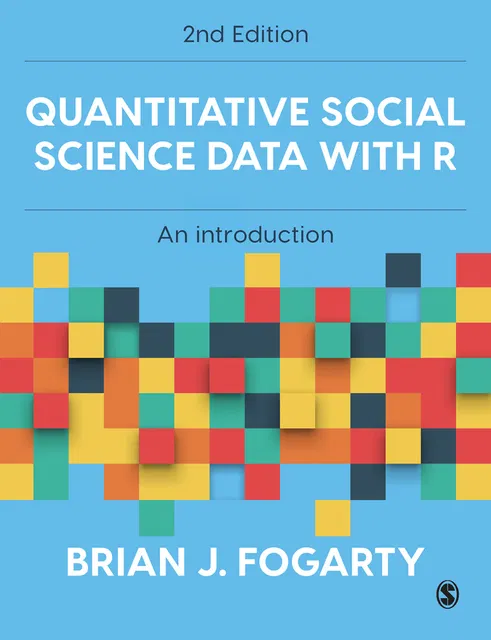

| Document Type | n |
|---|---|
| journalArticle | 355 |
| bookSection | 122 |
| book | 8 |
| conferencePaper | 8 |
| magazineArticle | 2 |
| report | 1 |
Homo Calculans
The Computerisation of the Human Sciences, 1950s-1960s
The University of Melbourne
Niles Zhao ![]()
NTU Singapore
2025-12-04
Digital HASS




The rise of minicomputers

Figure 2: Mainframes dominate the research in this corpus (IBM, Univac), but minicomputers start to become visible near the end.
Keywords across the disciplines

Distinctive Vocabulary

Figure 4: Most distinctive words by discipline, by tf-idf
Changing the object: “intervallic”

The meaning of “experiment”: Literary Studies

Figure 7: Most highly correlated words with “experiment” and its neighbours, in 200-word chunks from the Literary Studies articles.